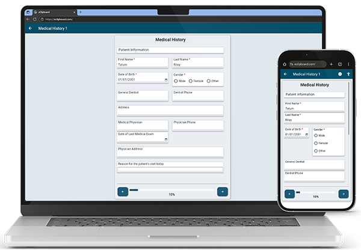

eForms are electronic forms for patients to fill out via eClipboard 25 or eClipboard Web.
Getting Started
Open Dental comes pre-loaded with a variety of eForms to choose from. Use these eForms out-of-the-box or customize them to fit your practice needs. Alternatively, create new eForms from scratch as needed for your patients.
Key Features
- Mobile optimized for tablet and mobile devices
- Use with eClipboard 25 or eClipboard Web for an intuitive patient experience
- Conditional field logic means patients only fill the fields relevant to them
- Various fields pull data from your database so patients can verify information and save time without entering duplicate information
- Automatically import all fields from the eForm to your database without any extra steps
For a closer look at eForms, see eForms: What Patient Sees.
